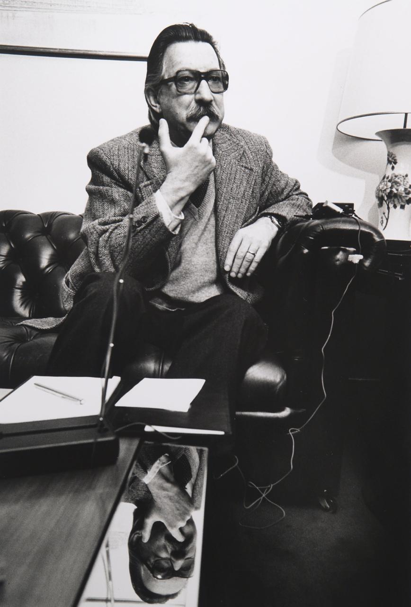

ELIZA was a small program with an enormous afterlife. Written in MAD-SLIP on MIT’s Compatible Time-Sharing System, it let a person type ordinary English and receive a reply that seemed to understand. People confided in it. Weizenbaum spent the rest of his life warning us not to.
Inventing ELIZA

This is an interdisciplinary investigation of ELIZA as a cultural and technical artifact, built around the original source code we recovered from Weizenbaum’s papers in the MIT archive in 2021. We read the code, the DOCTOR script, the hardware it ran on, and the long shadow it cast over how we talk about thinking machines.
It is a companion to the Critical Code Studies group’s collectively authored book Inventing ELIZA (MIT Press).
As we reach the sixtieth anniversary of ELIZA’s public debut, the book sets the rediscovered source code beside scripts that had been missing for decades, drawing on archival research at MIT, Stanford and UCLA. Together they reveal a far more sophisticated system than the famous DOCTOR demonstration ever suggested: a conversational programming environment, assembled incrementally between 1965 and 1968, with capabilities well ahead of its time.
ELIZA is a multiplicity
For sixty years a proliferation of BASIC and Lisp copies treated the DOCTOR therapy script as if it were ELIZA itself, rather than one demonstration of a general-purpose system. The archive tells a richer story: at least five major versions between 1965 and 1968, and scripts far beyond DOCTOR, from arithmetic tutoring to a Nixon parody. The program reached print in the January 1966 Communications of the ACM; the roughly 420 lines of MAD-SLIP behind it stayed lost until we recovered the source from the MIT archive in 2021.
DIT, and how ELIZA fakes a vocabulary
One of DOCTOR’s keywords, DIT, is not an English word at all. Weizenbaum invented it as a collecting point for a single set of replies, the ones about likeness and resemblance:
(DIT
((0)
(IN WHAT WAY)
(WHAT RESEMBLANCE DO YOU SEE)
(WHAT DOES THAT SIMILARITY SUGGEST TO YOU)
(WHAT OTHER CONNECTIONS DO YOU SEE)
(WHAT DO YOU SUPPOSE THAT RESEMBLANCE MEANS)
(WHAT IS THE CONNECTION, DO YOU SUPPOSE)
(COULD THERE REALLY BE SOME CONNECTION)
(HOW)))
Three near-synonyms carry no replies of their own. Each is defined as nothing but a pointer to DIT:
(ALIKE 10 (=DIT)) (SAME 10 (=DIT)) (LIKE 10 (=DIT))
The (=DIT) directive tells ELIZA to substitute DIT and run its rules instead. So “Men are all alike” matches ALIKE, defers to DIT, and produces “IN WHAT WAY”, the famous first line of the 1966 dialogue. The = is how ELIZA builds equivalence classes of keywords: rather than repeat the resemblance replies under three headings, Weizenbaum routes them all through one artificial token. It is a small economy, and it gives away the whole trick. ELIZA recognises a keyword and pours your own words into a shared template; it understands nothing. Watch this happen step by step ›
Somewhere on this site the DOCTOR is still listening. If you find her, she will answer in the words of the genuine 1966 script. Nothing you say leaves your browser.